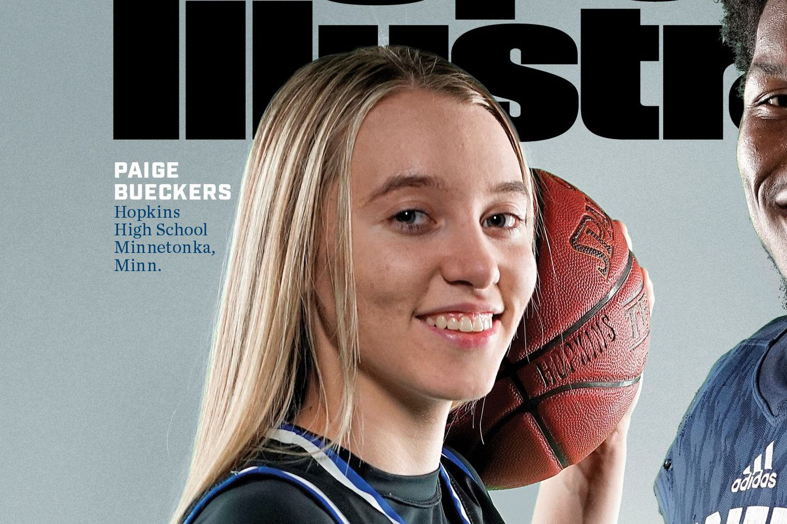
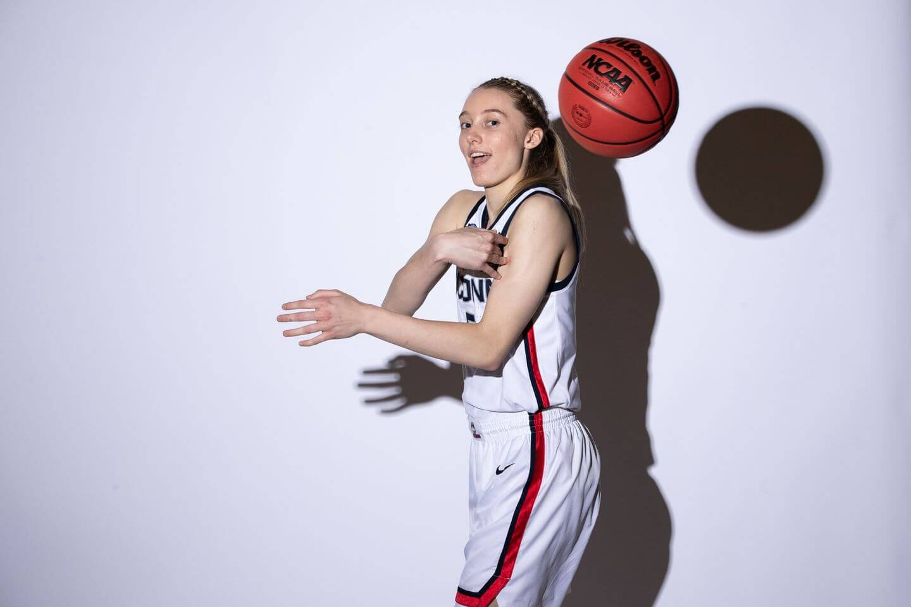
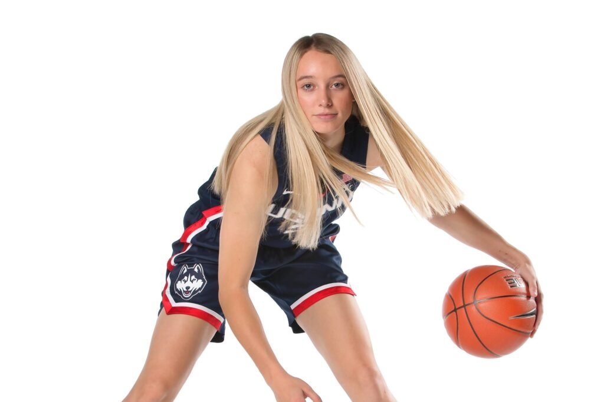
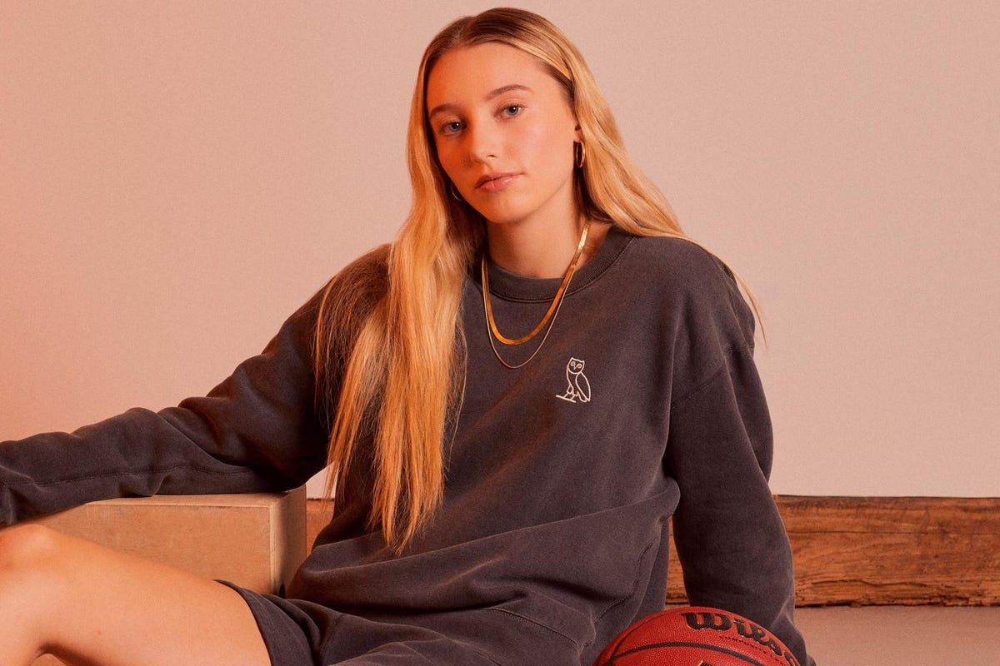

AP Player of the Year (2021)




Paige Bueckers is a 20 year old female basketball player, who is currently playing college basketball for the University of Connecticut as #5 on her basketball team. In her first season at UConn, Paige became the first freshman to earn a major national college player of the year award. That year, she got all four of the awards that she could've been eligible for. Paige has won three gold medals with the United States, remarkably at the 2019 FIBA Under-19 World Cup, where she got the award for Most Valuable Player. In addition, she got USA Basketball Female Athlete of the Year in the year 2019. During her time in high school, Paige attended Hopkins High School in Minnesota. At Hopkins, Paige became a McDonald's All-American selection and received national player of the year honors. As a child, Paige started playing basketball at 5 years old, her dad was her first coach until she was 12 years old, which was when she was considered good enough to play for the 10th grade and junior varsity teams at Hopkins High School. She led her team with three point-shooting and her clean assists. Due to her talent and passion, she became the 11th number-one recruit to sign and attend UConn since 1998.
This video is a visual representation of what Paige is like.